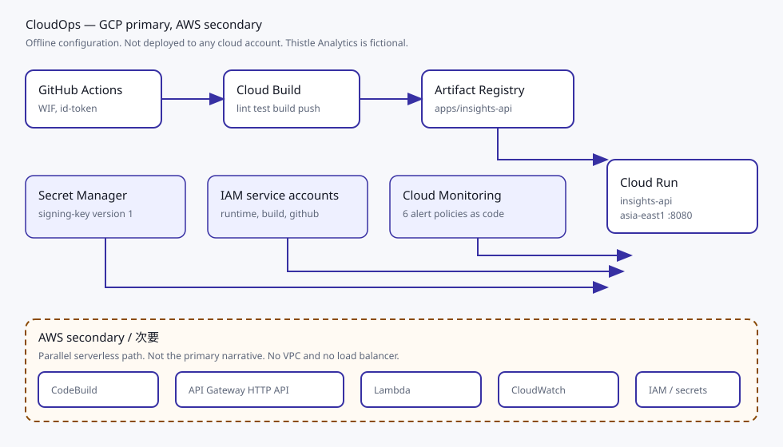
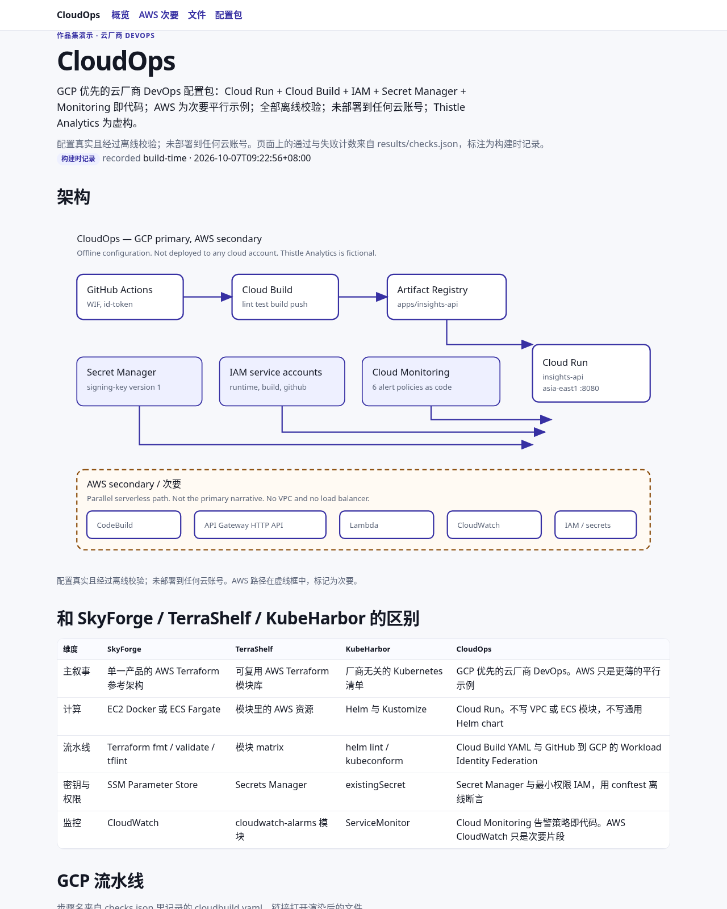
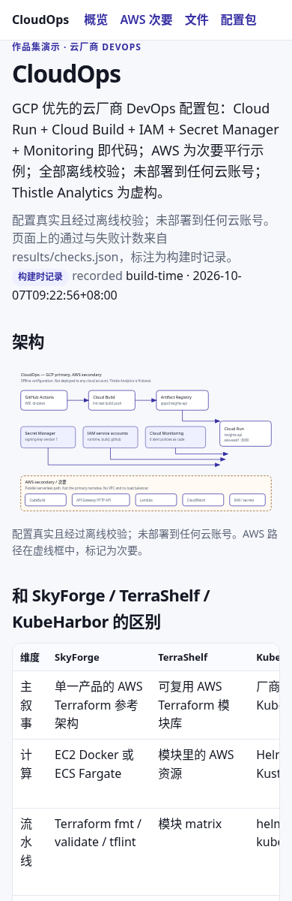

Cloud Build step
作品集演示 · 云厂商 DevOps
CloudOps
GCP 优先的云厂商 DevOps 配置包：Cloud Run + Cloud Build + IAM + Secret Manager + Monitoring 即代码；AWS 为次要平行示例；全部离线校验；未部署到任何云账号；Thistle Analytics 为虚构。
配置真实且经过离线校验；未部署到任何云账号。页面上的通过与失败计数来自 results/checks.json，标注为构建时记录。
构建时记录 recorded build-time · 2026-10-07T09:22:56+08:00
架构

和 SkyForge / TerraShelf / KubeHarbor 的区别
| 维度 | SkyForge | TerraShelf | KubeHarbor | CloudOps |
|---|---|---|---|---|
| 主叙事 | 单一产品的 AWS Terraform 参考架构 | 可复用 AWS Terraform 模块库 | 厂商无关的 Kubernetes 清单 | GCP 优先的云厂商 DevOps。AWS 只是更薄的平行示例 |
| 计算 | EC2 Docker 或 ECS Fargate | 模块里的 AWS 资源 | Helm 与 Kustomize | Cloud Run。不写 VPC 或 ECS 模块，不写通用 Helm chart |
| 流水线 | Terraform fmt / validate / tflint | 模块 matrix | helm lint / kubeconform | Cloud Build YAML 与 GitHub 到 GCP 的 Workload Identity Federation |
| 密钥与权限 | SSM Parameter Store | Secrets Manager | existingSecret | Secret Manager 与最小权限 IAM，用 conftest 离线断言 |
| 监控 | CloudWatch | cloudwatch-alarms 模块 | ServiceMonitor | Cloud Monitoring 告警策略即代码。AWS CloudWatch 只是次要片段 |
GCP 流水线
步骤名来自 checks.json 里记录的 cloudbuild.yaml。链接打开渲染后的文件。
IAM 最小权限
服务账号绑定来自 checks.json。Rego 正例退出码 0，失败数 0。负向夹具按预期失败的文件数 5。
| 用途 | 账号 | 角色 | 资源 | 成员 |
|---|---|---|---|---|
| deploy | cloud-build-sa | roles/run.admin | projects/thistle-analytics-demo/locations/asia-east1/services/insights-api | serviceAccount:cloud-build-sa@thistle-analytics-demo.iam.gserviceaccount.com |
| deploy | cloud-build-sa | roles/artifactregistry.writer | projects/thistle-analytics-demo/locations/asia-east1/repositories/apps | serviceAccount:cloud-build-sa@thistle-analytics-demo.iam.gserviceaccount.com |
| deploy | cloud-build-sa | roles/iam.serviceAccountUser | projects/thistle-analytics-demo/serviceAccounts/insights-api-sa@thistle-analytics-demo.iam.gserviceaccount.com | serviceAccount:cloud-build-sa@thistle-analytics-demo.iam.gserviceaccount.com |
| deploy | github-deploy-sa | roles/run.admin | projects/thistle-analytics-demo/locations/asia-east1/services/insights-api | serviceAccount:github-deploy-sa@thistle-analytics-demo.iam.gserviceaccount.com |
| deploy | github-deploy-sa | roles/artifactregistry.writer | projects/thistle-analytics-demo/locations/asia-east1/repositories/apps | serviceAccount:github-deploy-sa@thistle-analytics-demo.iam.gserviceaccount.com |
| deploy | github-deploy-sa | roles/iam.serviceAccountUser | projects/thistle-analytics-demo/serviceAccounts/insights-api-sa@thistle-analytics-demo.iam.gserviceaccount.com | serviceAccount:github-deploy-sa@thistle-analytics-demo.iam.gserviceaccount.com |
| wif | github-deploy-sa | roles/iam.workloadIdentityUser | projects/thistle-analytics-demo/serviceAccounts/github-deploy-sa@thistle-analytics-demo.iam.gserviceaccount.com | principalSet://iam.googleapis.com/projects/000000000000/locations/global/workloadIdentityPools/github-pool/attribute.repository/example.invalid/thistle-analytics/insights-api |
| runtime | insights-api-sa | roles/secretmanager.secretAccessor | projects/thistle-analytics-demo/secrets/insights-api-signing-key | serviceAccount:insights-api-sa@thistle-analytics-demo.iam.gserviceaccount.com |
| runtime | insights-api-sa | roles/logging.logWriter | projects/thistle-analytics-demo | serviceAccount:insights-api-sa@thistle-analytics-demo.iam.gserviceaccount.com |
| runtime | insights-api-sa | roles/cloudtrace.agent | projects/thistle-analytics-demo | serviceAccount:insights-api-sa@thistle-analytics-demo.iam.gserviceaccount.com |
| invoker | internal-caller | roles/run.invoker | projects/thistle-analytics-demo/locations/asia-east1/services/insights-api | serviceAccount:internal-caller@thistle-analytics-demo.iam.gserviceaccount.com |
Monitoring 目录
策略数 6。Schema 退出码 0。passed 列是 schema 校验结果，不是线上告警状态。
| 策略 | 严重级别 | 条件摘要 | schema |
|---|---|---|---|
| insights-api instance and concurrency anomaly | WARNING | Billable instance count at the maxScale cap, or concurrent requests above the container concurrency. | true |
| insights-api application error log spike | ERROR | Log-based metric insights_api_app_errors increased above 20 lines in 5 minutes. | true |
| insights-api Cloud Run 5xx ratio | CRITICAL | Cloud Run 5xx responses above 5 percent of the request rate for 5 minutes. | true |
| insights-api Cloud Run p95 latency | WARNING | Request latency p95 above 800 milliseconds for 5 minutes. | true |
| insights-api uptime check failed | CRITICAL | Uptime check against insights-api.thistle.example /healthz failed. | true |
| insights-api WIF or deploy SA auth failure | ERROR | Log match for Workload Identity Federation or github-deploy-sa authentication failures. | true |
AWS 次要 secondary
Lambda、API Gateway HTTP API、CodeBuild 和 CloudWatch 是平行示例。GCP 才是主叙事。打开次要页。
检查结果
工具版本和退出码都来自同一次 make check。时区是 Asia/Shanghai。
terraform
Terraform v1.9.8
tflint
TFLint version 0.55.1
checkov
3.2.449
conftest
Conftest: 0.71.1
actionlint
1.7.12
shellcheck
version: 0.11.0
yamllint
yamllint 1.35.1
pytest
pytest 8.3.5
ruff
ruff 0.11.12
schema
1
gcp credentials used
false
aws credentials used
false
yamllint exit
0
actionlint exit
0
ruff exit
0
terraform fmt exit
0
terraform validate exit
0
terraform test exit
0
terraform test passed
1
terraform test failed
0
tflint exit
0
checkov exit
0
checkov high failed
0
checkov failed
0
pytest exit
0
pytest passed
24
pytest failed
0
app coverage percent
100.0
本地页面截图
下面两张图是本静态页在构建机上的无头浏览器渲染。不是 GCP Console，也不是 AWS Console。


下载
cloudops-config-0.1.0.tar.gz 含 gcp/、aws/、policies/、fixtures/。不含工具二进制，不含密钥值。